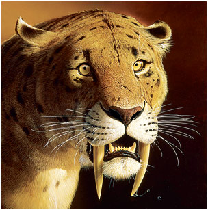
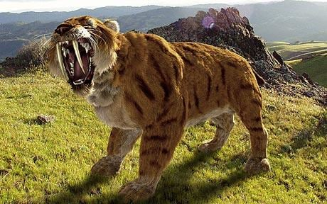

History
The sabre-toothed tiger is one of the most well-known prehistoric animals along with giants such as the woolly mammoth. Sabre-toothed tigers roamed the mid-western US and parts of both North and South America and were named for the enormous canines which skeletons show, protruded quite far out of their mouths.It became extinct in the Quanternary period(the end of the dinosaur period) and during the ice age.

Diet
They normally fed on deer, buffalo, antelopes, camels, ground sloths, bison, and tapirs. Saber tooth cats also eat mammoths and mastodons. Smilodons had killed quite a few humans but this is not confirmed. Smilodons living in North America preyed on large herbivorous mammals such as camels and bisons. The modern-day American bisons and camels are much smaller than those living in those times. Saber-tooth cats were not only apex predators in North America they were equally successful in South America. Saber-toothed tigers competed with American lion and dire wolf. The prey territory was often overlapped among these animals. The tiger’s diet also consists of ungulates including litopterns and toxodonts. Smilodons possibly preferred eating only the flesh leaving behind the bones for scavengers.
